Press kit
BlairsLab is a one-person studio in Australia making small, patient games about time. Every game is set in the same world, and a lantern moth turns up in each of them. You are welcome to use anything on this page to write about, stream or make videos of our games. Keys and early builds are available on request.
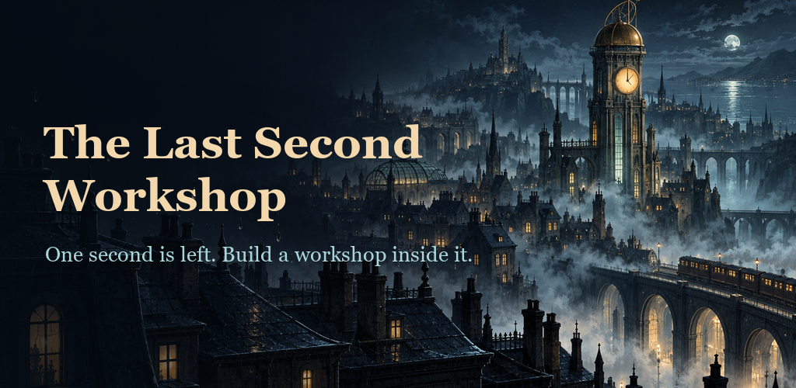
The Last Second Workshop
| Genre | Idle / incremental game with a story |
| Platform | Android (Google Play) |
| Released | 17 October 2026 |
| Price | Free. Optional purchases and optional reward videos; no forced ads, no daily-login pressure |
| Languages | 12 |
| Store | Google Play |
About
Across the city of Meridia, every clock agreed on the same impossible second. The last train hangs between two stations; someone is still waving from a window. Build a clockwork workshop inside that second, catch moments of time, connect machines under three different laws of time, and mend the routes that bring a stopped city home, across twenty story chapters.
Features
- A cosy, story-led idle game: twenty chapters, eight places, a cast of characters to meet
- Machines on rings that feed each other; Fold the workshop to grow stronger
- Trials for players who know the workshop well
- Plays offline and keeps working while you're away
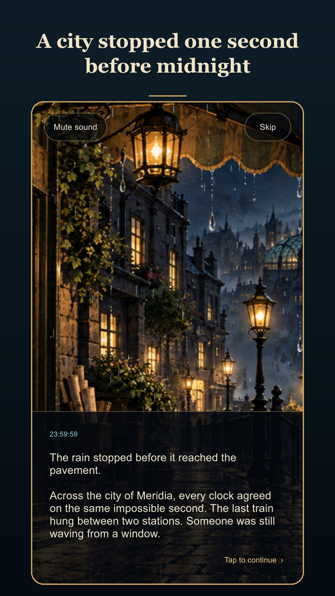
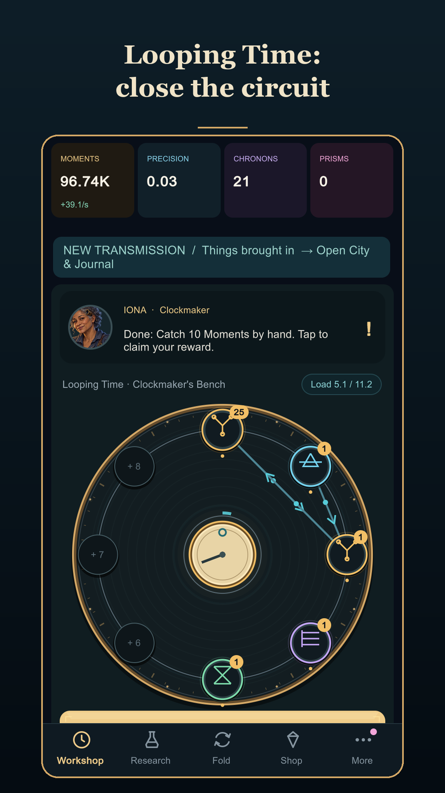
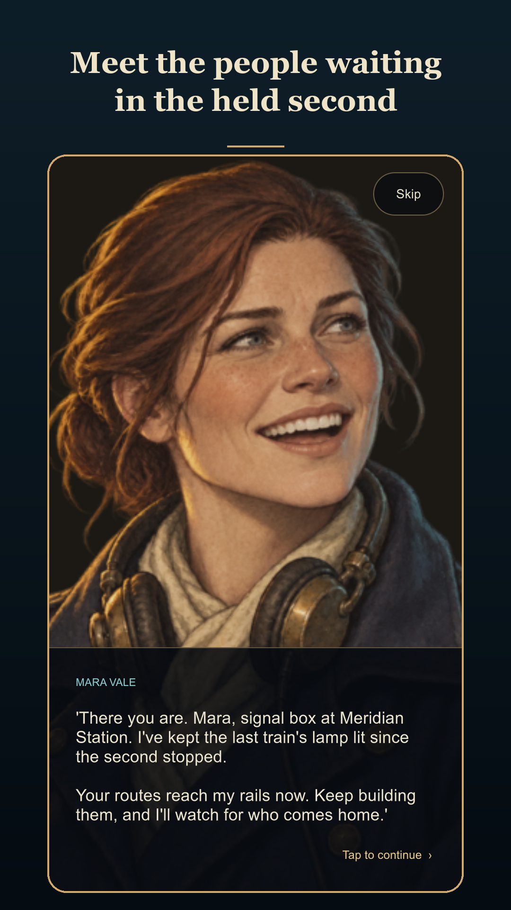
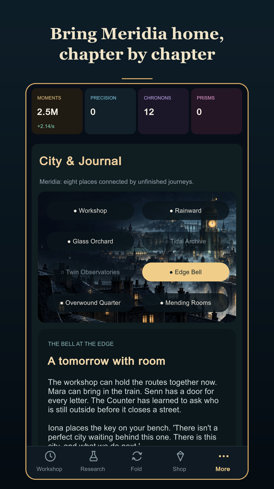
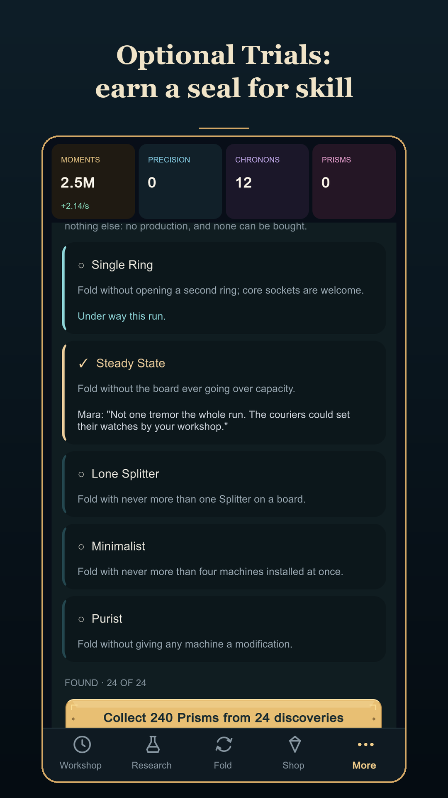
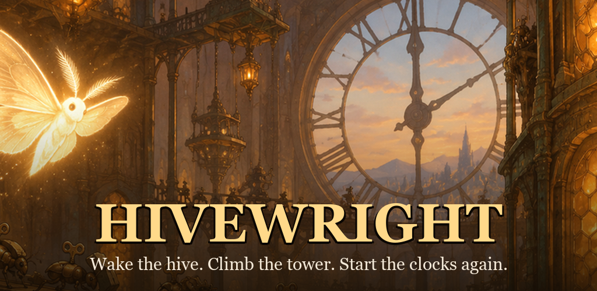
Hivewright
| Genre | Idle / incremental climbing game |
| Platform | Android (Google Play) |
| Released | October 2026 |
| Store | Google Play |
| Price | Free. Optional purchases and optional reward videos; no forced ads |
| Languages | 12 |
About
Deep inside a stopped clock tower, a hive of tiny wind-up insects is still ticking. Gather oil, brass and springs, wind up workers, send swarms up the stair against the creeping Rust, and restart a great clock every hundred floors. The tower never ends.
Features
- Build, assign and climb: a deep incremental with expeditions, equipment and drafts
- Rewind to grow stronger; Eras, curios and Trials for the long climb
- An endless tower with a story told floor by floor
- Leaderboards on Google Play Games
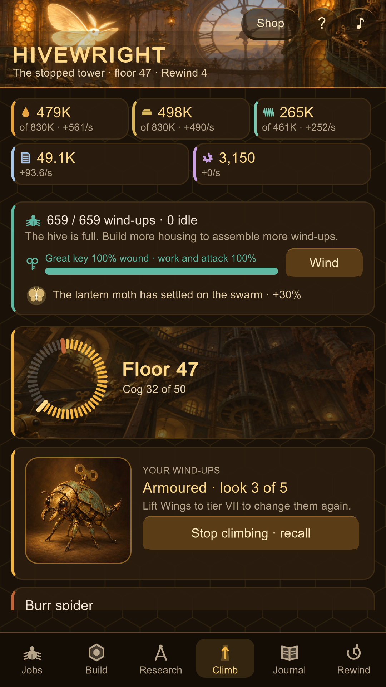
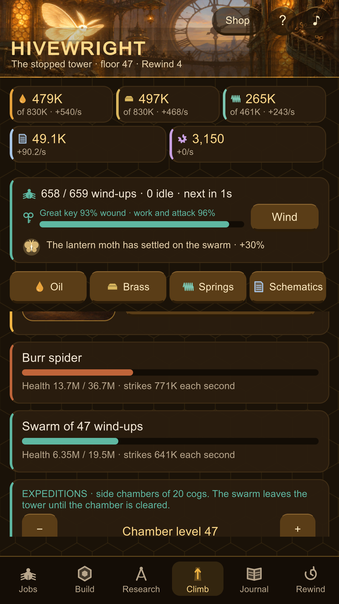
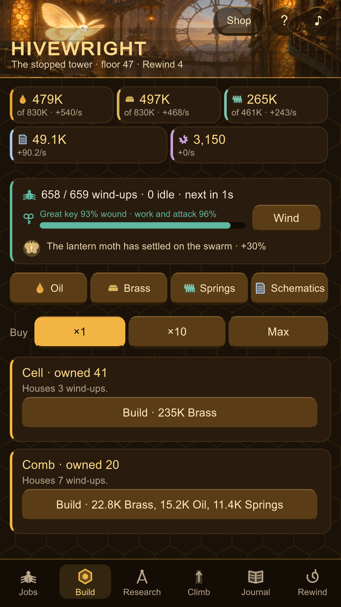
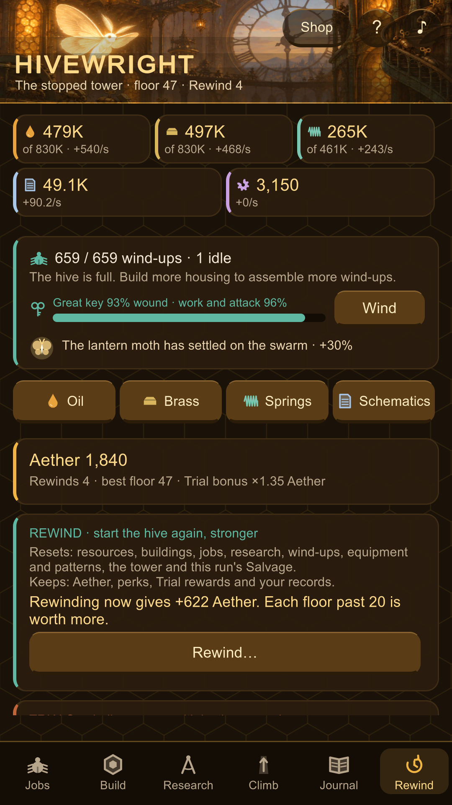
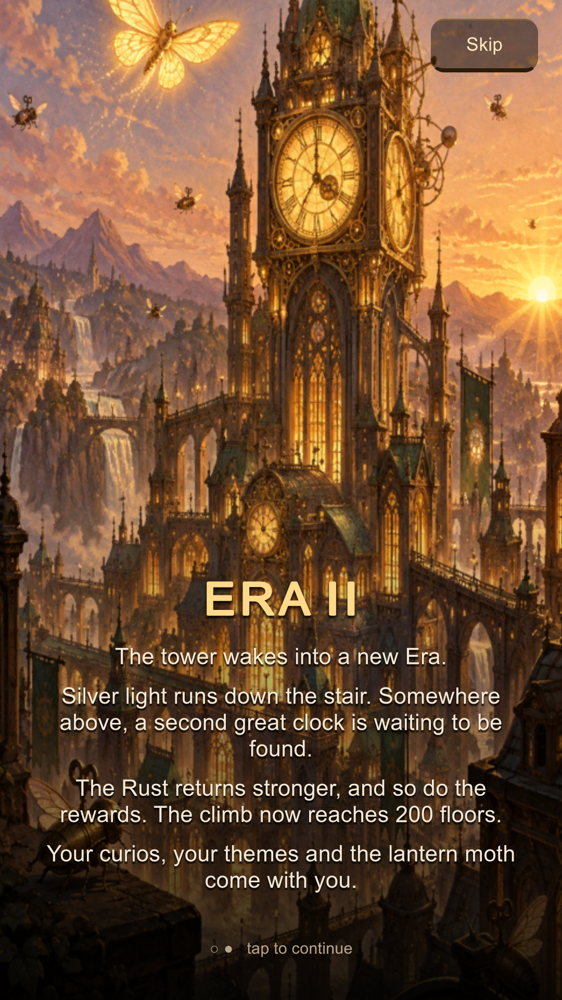

The Last Bell
| Genre | Tower defense |
| Platform | Android (Google Play) |
| Status | In closed testing, 2026 |
| Price | Free |
About
In a valley where every clock has stopped, one bell tower still keeps time. The valley's old wind-ups have woken with Rust in their springs and are walking the roads towards the only thing still ticking. Raise towers beside the roads, mend every wind-up you stop, and when a minute goes wrong, ring the bell backwards and play it again.
Features
- Rewind the minute: undo the last 30 seconds, see the echoes of what went wrong, and replay it
- Towers in seven rarities with families that work together and final forms at level 10
- Hand-made valleys, a monthly featured valley, and the Peal: a fortnightly competition in groups of 100
- Hand-painted art, an original score, and wind-ups that are mended, never destroyed
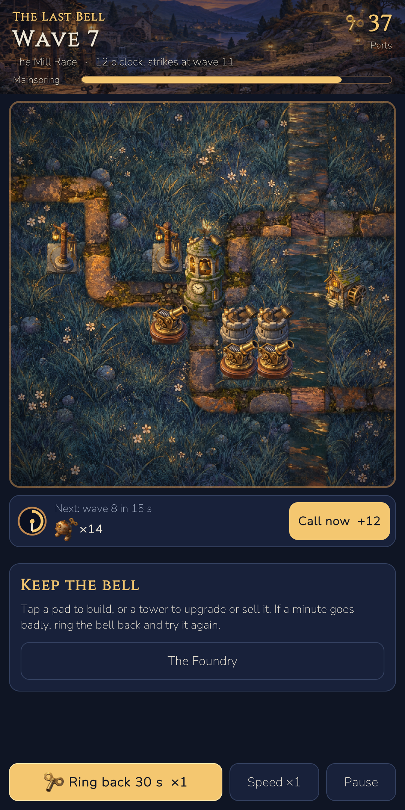
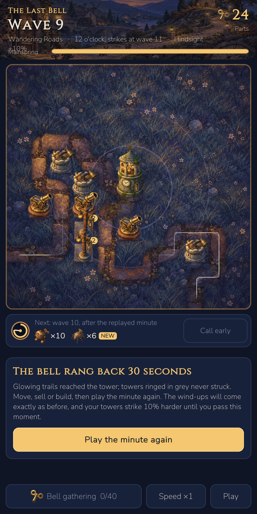
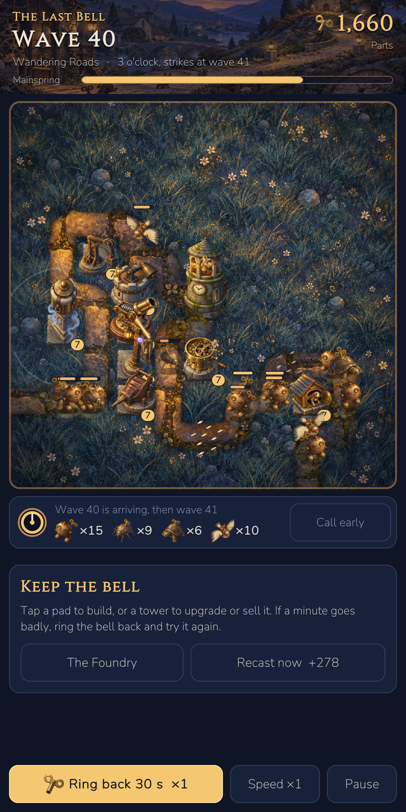
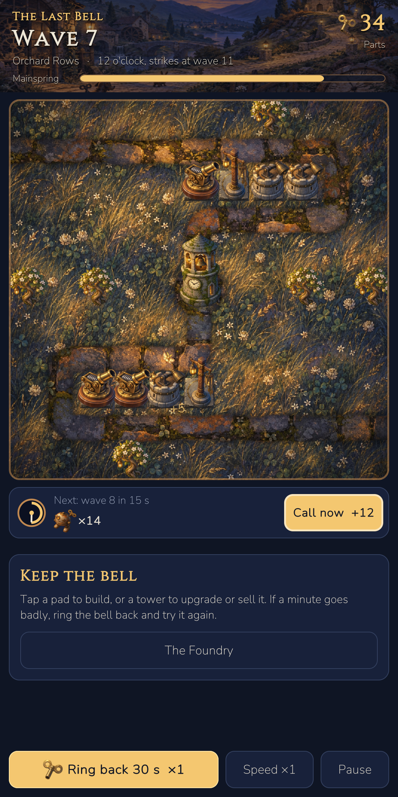
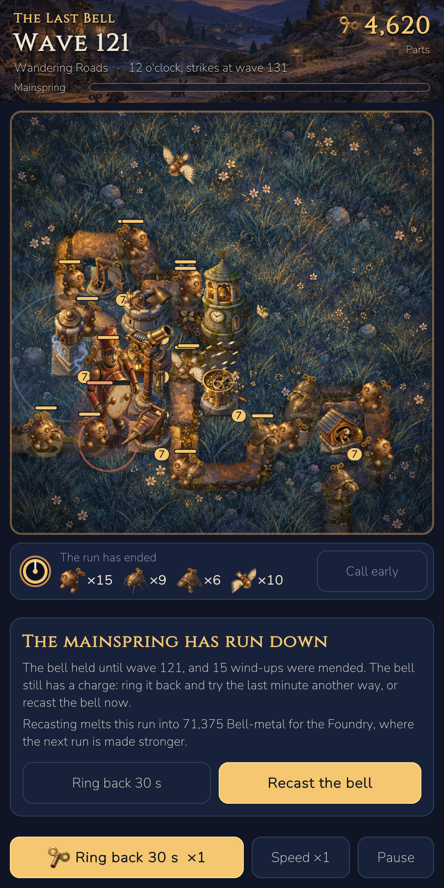